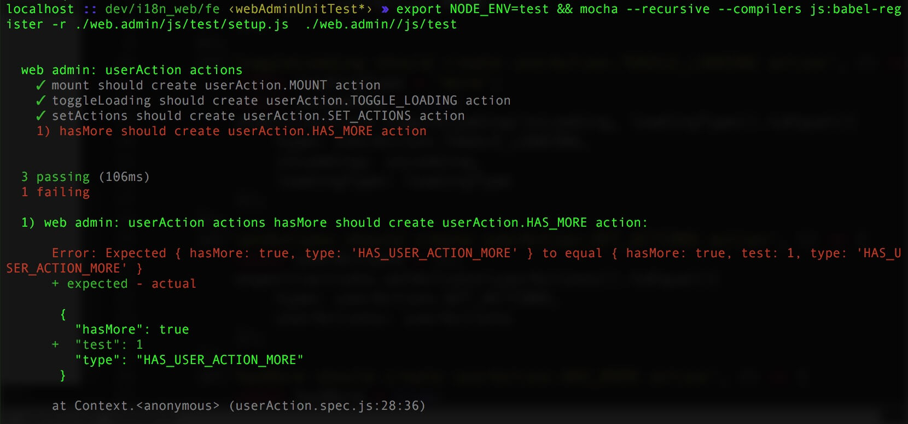
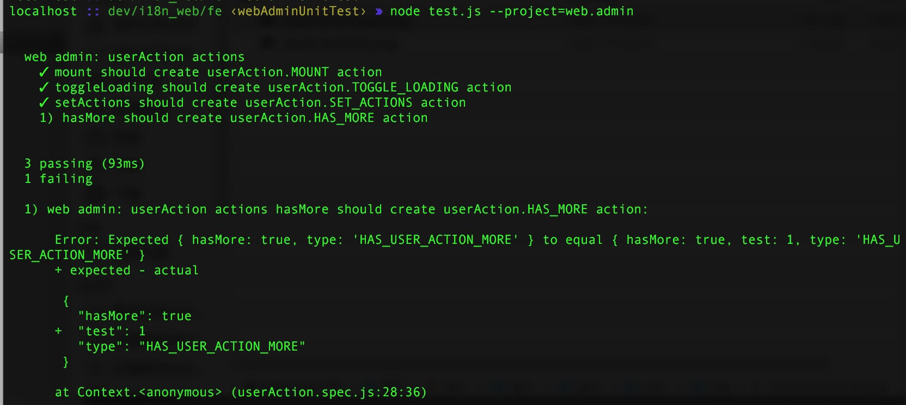
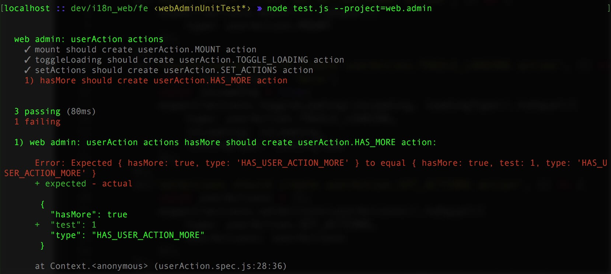

程序员总少不了和terminal打交道，可是terminal并没有语法高亮，在黑色的屏幕上，绿色的日志，绿色的告警，绿色的错误，绿色的输出……一切都是绿色的。也许我们已经习惯了terminal的单调，与其说是习惯，不说说是对现状的一种无奈。
一直以来，我对黑底绿字的terminal也不觉得什么？直到前些天，一个问题勾起了我的好奇心。我用node脚本封装了下mocha的测试，我发现mocha的测试输出很漂亮，用例通过与否一目了然，可是经过我的脚本后的输出就从巴黎时装展的维密天使论为了村里的丫蛋。这种用户体验的天壤之别让我难以接受，我之所以封装是为了调用简单，便于传参，可不是为了要这种毫无辨识度的测试输出。
mocha的测试输出
我的测试输出
怀着对真相的执着，我准备求本溯源。既然是mocha的输出，那么mocha的源代码中一定能够给我们提供一些线索。我打开了mocha的github，凭着程序员的本能与直觉，我找到lib/reporters/base.js，打开文件，进入我视线的不是我熟悉的rgb，而是一些奇怪的数字0, 30, 31, 32, 33, 90, 91, 92, 93。我意识到这些数字已经超出了我的认知。
为了一探究竟，我顺藤摸瓜看到了color函数的实现。
var color = function(type, str) {
return `\u001b[${type}m${str}\u001b[0m`;
}到此， 我已经知道了\u001b[xxm就是让丫蛋成为维密天使的时装设计师，根据这个我们通过正则表达式匹配不同类型的文案然后就可以依葫芦画瓢上色，让我们自己的脚本输出和mocha的输出一模一样了。
大功告成
现在我们知其然不知其所以然，这个神秘的时装设计师到底是何方圣神呢？
维基百科告诉我他是ANSI终端转义码(ANSI terminal escape codes)家族中的选择图形装饰(select graphic rendition[SGR])转义码，由以下三部分组成:
- 由\u001b(ESC)和[组成的命令序列引导(command sequence introducer)
- 分号分隔的至少一个数值命令
- 字母m，结束编码同时标示这是个选择图形装饰
数值命令常见的取值如下:
- 30-37 设置前景色为0-7对应的颜色
- 40-47 设置背景色为0-7对应的颜色
- 39 重置前景色
- 49 重置背景色
- 90-97 设置高亮前景色为0-7对应的颜色
- 100-107 设置高亮背景色为0-7对应的颜色
- 0 重置所有属性
Notes: 0-7对应的颜色分别为黑、红、绿、黄、蓝、紫、靛，灰，其中90，100对应的为暗灰，97， 107对应的为白，具体色值参考维基百科
color.js就是根据这个原理实现的。
遇到这个问题，我们没有安于现状，也没有只是简单的引入colors.js来实现功能，而是追本溯源，从而扩展了自己的知识边界。
好奇心是学习知识的原动力。
最后跟大家分享一个最近的感悟，不论自己在做什么业务，只要保持对技术的追求，就不会缺少成长。